Convert existing Azure Virtual Machines to use Hybrid Use Benefit
Hybrid Use Benefit (HUB) Allows customers with Software Assurance to use their on-premises Windows Server licenses to license Servers in Azure. With one Windows Server license, you can run two Windows Server Virtual Machines up to 8 Cores or a single Virtual Machine up to 16 Cores. This is a significant price reduction for customers who are using standard Windows Server image from Azure Marketplace (Up to around 40% cost saving). Windows Server Datacentre edition allows simultaneous usage both on-premises and in Azure whereas the standard can only be used either on-premises or in Azure.
Microsoft has an online calculator which can help customer calculate their potential saving if they use Hybrid Use Benefit (https://azure.microsoft.com/en-us/pricing/hybrid-use-benefit/?v=17.220).
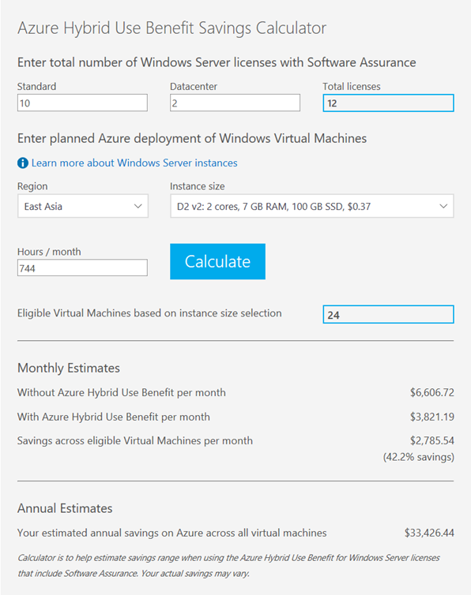
When we create new Virtual Machines, using Portal / PowerShell or using an ARM template we can specify to use HUB template images. Initially, this was only available via PowerShell and ARM templates, but it is now available for deployment using the Azure Portal as well.
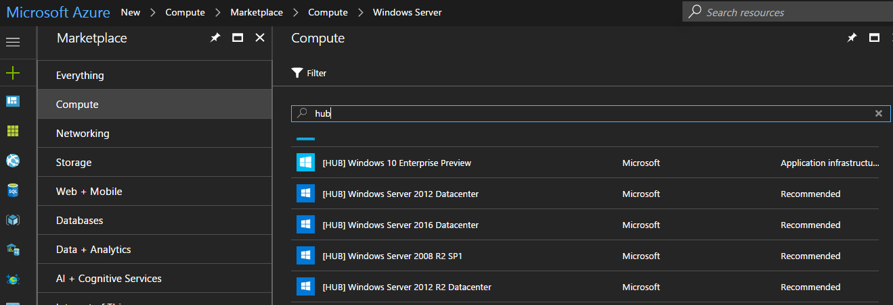
Recently I had a customer who had used Marketplace images (Windows Server Datacentre template instead of HUB) and wanted to look at whether it’s possible to convert existing virtual machines into HUB activate images. While doing a bit of research, there’s no straightforward method to convert existing Virtual Machines into HUB activated Virtual machines. Only method available at the moment is to delete the virtual machine and re-create using existing resources with a license switch set on the Virtual machine.
Below is a virtual machine created using standard Windows Server datacenter template.
Below is the output from Resource Explorer on a standard Windows Server virtual machine without having enabled Hybrid use benefit.
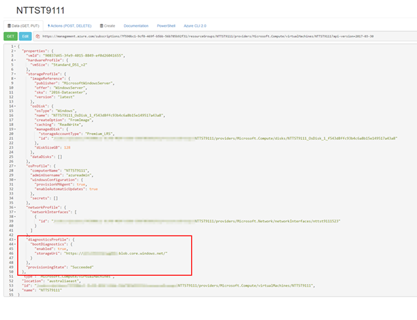
Next step for us is to delete the VM but before deleting the virtual machine. Before we do this, let’s export the automation template from the Azure portal which we will use and modify accordingly to apply HUB when re-creating the virtual machine.
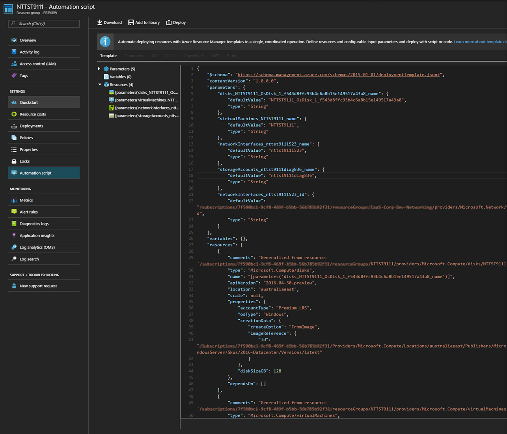
Delete the VM
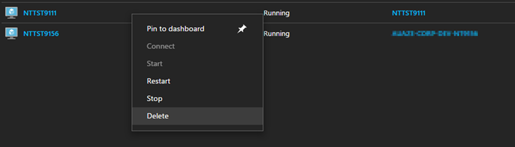
Next step is to verify and confirm Virtual Machine object is deleted but all other resources are available.
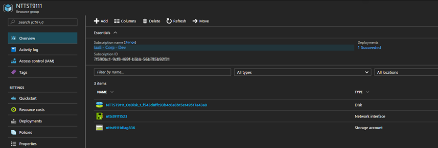
Next I will use the automation template which we extracted earlier and re-deploy this Virtual machine from Azure portal. Let’s first make some modifications to the template
Add “LicenseType” : “Windows_Server”
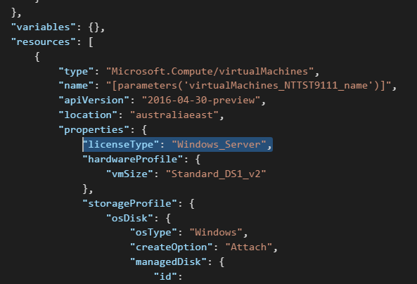
Remove Image reference
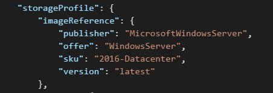
Remove OS profile
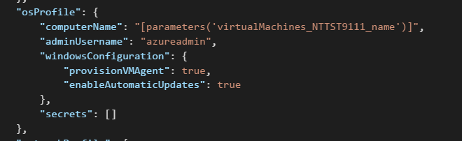
Modify OS Disk create option to attach
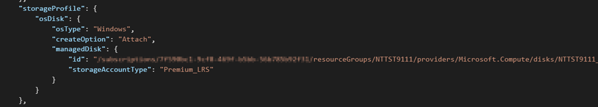
Next step is for us to deploy this template against the same resource group.
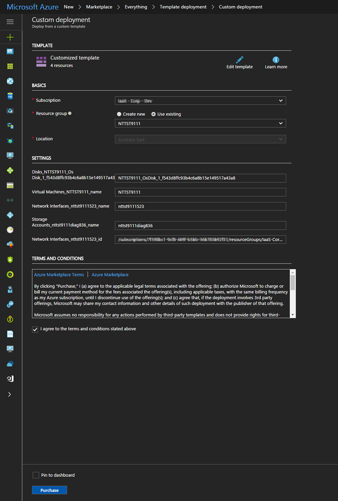
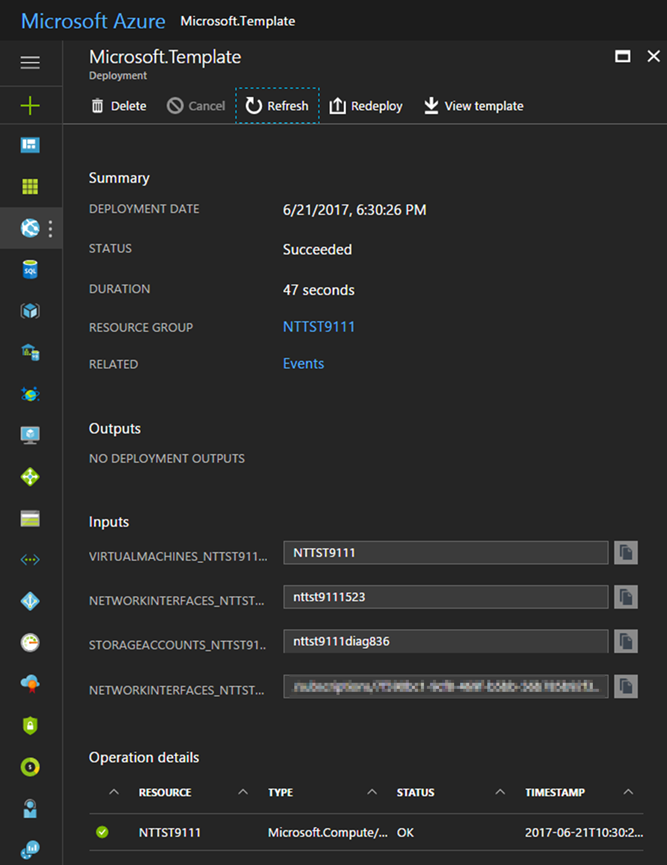
You will notice that the deployment will skip disk/network and storage diagnostic resources and provision the Virtual machine using existing resources available.
Having a look at the Resource Explorer, we can see that the license type is now set for this virtual machine.
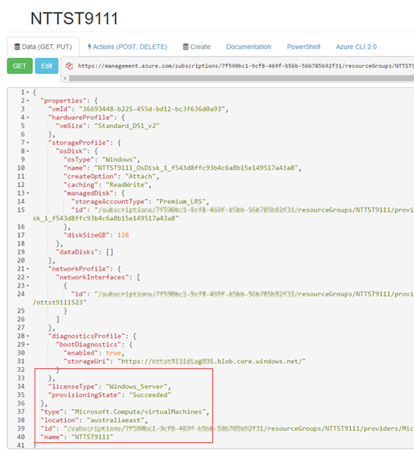
After logging into the virtual machine, I can use slmgr /dlv to check the license activation status. NTTST9111 virtual machine is activated against Microsoft KMS Server.
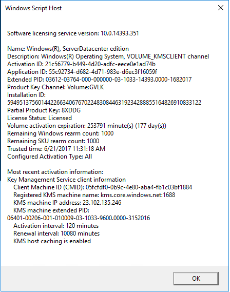
Since we have set the license option in the template, this Virtual Machine will now use Hybrid Use benefit, and you won’t get charged for the operating system.
Have a look at some of the resource below for more information relating to Hybrid Use Benefit
[youtube https://www.youtube.com/watch?v=kxRo85G6yKc]
References
https://azure.microsoft.com/en-us/pricing/hybrid-use-benefit/faq/
https://blogs.msdn.microsoft.com/azureedu/2016/04/13/how-can-i-use-the-hybrid-use-benefit-in-azure/
https://azure.microsoft.com/en-us/pricing/hybrid-use-benefit/?v=17.22
https://azure.microsoft.com/en-us/resources/videos/azure-hybrid-use-benefit/